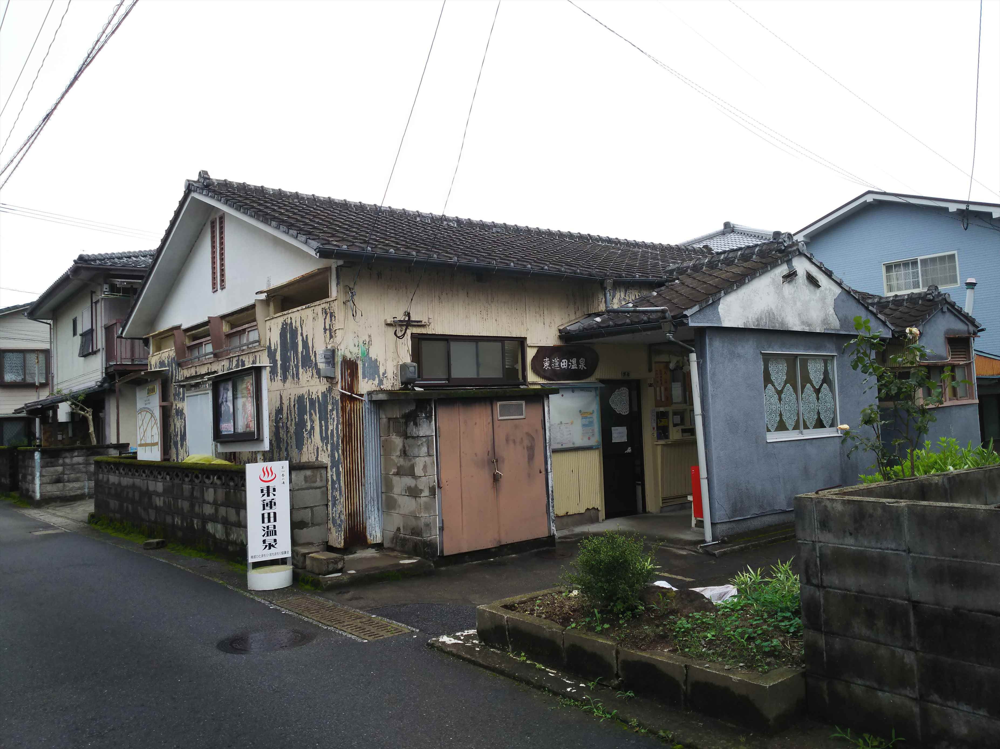

2025（R7） 6月23～25日 別府温泉
急に仕事がクソ忙しくなったのですが、乗りたかった乗り物に乗る旅に出ました。
夜の新大阪駅。
銀河で西に下ります。
列車は京都発ですが、２度目なので大阪からの乗車
で十分です。
新大阪から夜行に乗るのは、子供の時に彗星に乗っ
た時以来かな。懐かしい思い出です。ホームも同じ
のはず。
前乗ったときとは細かいところが変わってる。
前回乗車時に、座席のほうも乗ってみたいと思って
予約チャレンジしたら、取れちゃいました。
兵庫駅を通過。自宅を激写。撮れるかいな・・・
とっとと寝ます。初回のクシェットもそうでしたが、
座席も冷房強くて苦痛。もー夏には乗らんぞ！
岡山で３時間ぐらい止まってました。
新幹線トラブルでもあったのか、隣で新型やくもが
列車ホテルやってました。
運転停車でドアが開かないのが残念・・・

実は息子と一緒に乗ったのですが、学校があるため
息子は広島で下車してとんぼ帰りです。
今回の銀河は山陽ルートです。
おもてなしのメインが柳井なので、名物の金魚提灯
が車内にもかざられてますね。
天気悪いっす。
周防大島への橋ももやがかかって幻想的な感じです。
柳井に到着。
ＥＦ６５が停車してるのも鉄向けのおもてなし？
こんなんくれました。
無事、下関に到着。
さらに西へ。下関からＪＲ九州エリアです。
今回は金券ショップで格安（１１００円）で入手し
た株主優待全線一日乗車券を使います。
小倉でかしわうどんをいただきました。
ん～やっぱり甘めでおいしい。
最近のＪＲ九州はクロスシート車を必死にロングシ
ート化していますが、運よくクロスシート車です。
中津駅。子供の時は新大阪から乗った彗星で、ここ
で下車しました。途中で降りるのがめちゃ不満でし
た。
もう特に行きたいところもなく、時間もたくさんあ
るので豊後豊岡駅で降りてみました。
海沿いの古めの駅舎がうれしい駅です。
亀川駅で降りて温泉へ。
温泉街は駅前ですが、ここへは行かず好みの共同浴
場に向います。
亀川筋湯温泉。
ん～、しぶい。
熱めのお湯ということで構えてましたが、いいお湯でした。
さすが別府の湯。
別府で降りてもう一湯目指します。
別府名物のおもろい銅像。
高架下が市場になってます。
時間がなくてのぞいてるひまがなくて残念。

浜脇温泉エリアは行ったことなかったんですが、古
めの住宅街に共同浴場が点在していて、好きな雰囲
気です。
朝見温泉です。
こちらもええお湯でした。

東別府駅まで歩いて行きます。 他にも道中で趣のある共同浴場があったんですが、入る時間も元気もなく残念・・・
開業時の面影を残している東別府駅。
改修もされて綺麗すぎるのが玉にきず。
別府大学駅で下車して歩いて行くと、さんふらわぁ
が見えてきました。
乗って見たかったもうひとつがこのさんふらわぁ。
おととし新造された最新のさんふらわぁです。浦さ
んのレポートにもあったような。
いつものごとく、カウンターで乗船手続きをしようとしたら、「ＱＲ
コードがあればそのままご乗船下さい」やて！世の中、どんどん進ん
でますわ。
さすが新造船だけあってロビーも豪華です。
で、部屋に入るのもＱＲコード読ませてと・・・反応悪くて全然あか
へんがな！
カウンターに、どうにかならんか聞きに行ったら、切符っぽく紙にＱ
Ｒを印刷する機械がありました。
ちゃんと考えられてるわ。
雨の別府にさよならです。
一番安い区画ですが、備品はタオルやイヤホンもついてて、なかなか
っすね。
船は綺麗なんですが、やっぱ最近のどの新造船そうなんですが、なん
か無機質というか、共有ユペースがイマイチなんすよ。
船内の食事がばか高く（ビュフェのみ、２５００円）持ち込んだ食事
を海を見ながら食べようと思ったんですが、そのスペースが少ないん
よな。
この点は門司航路のほうが優秀やな。
ただ、マジックショーやってくれたりプロジェクションマッピングシ
ョーやったりと、客を楽しませるイベントは頑張ってました。
無事に大阪に戻ってきました。
銀河の座席とは乗り心地が雲泥の差でした。当たり
前やけど。
海から見る大屋根リング。面白い光景です。
楽しかったけど疲れました・・・
ちなみにこの新造船の最大の特徴が、ＬＮＧ燃料で
動いているっちゅうことです。
後ろ側にある巨大なタンクみたいなんにＬＮＧが満
載されてるんやろな。
朝のニュートラムが３分毎に動いてるのがビックリ
でした。